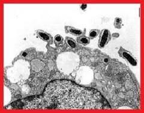

Typhus :Rickettsia prowazekii
3) Agent étiologique:
Description/détermination :
Il s’agit d’un petit bacille Gram -, intracellulaire obligatoire. C’est une bactérie aérobie.
Génome :
Le génome de Rickettsia Prowazekii contient 834 gènes et 1 111 523 paires de bases.
4) Diagnostic:
Méthodes :
L’infection à Rikettsia Prowazekii peut être détectée par la technique de PCR et les tests immunologiques (méthode ELISA. On peut également utiliser d’autres méthodes comme l’immunoperoxydase, l’hybridation sur tache, le buvardage de Western, l'immunofluorescence indirecte (IFA), une épreuve de fixation du complément ou encore un test d'agglutination au latex). Le diagnostic microbiologique repose habituellement sur la sérologie, où une hausse des titres d’un facteur quatre permet de poser le diagnostic. L'organisme peut être isolé après culture d'échantillons cliniques (biopsie cutanée ou prélèvement sanguin) et observé à l'aide d'un microscope après coloration et immunofluorescence.
5) Thérapies:
Molécules :
Pour les adultes et les enfants, la thérapie utilisée est la doxycycline :
- Adultes : 100 à 200 mg en 1 prise ou 100mg 2x/jour jusqu’à 3jours après disparition de la fièvre.
- Enfants : 4 mg/kg en 1 prise sans dépasser la posologie adulte ou 4 mg/kg/jour en deux prises sans dépasser la posologie adulte jusqu’à 3 jours après disparition de la fièvre.
Cibles moléculaires :
La doxycycline appartient à la classe des tétracyclines.
Elle se lie de façon réversible à la sous unité 30S du ribosome bactérien, ce qui inhibe la synthèse de protéines bactériennes. Elle a un effet
bactériostatique.
6)Vaccin:
Aucun vaccin commercialisé n'est actuellement disponible; toutefois, certains vaccins expérimentaux sont actuellement mis au point pour les personnes à risque élevé (professionnels de santé et scientifiques)